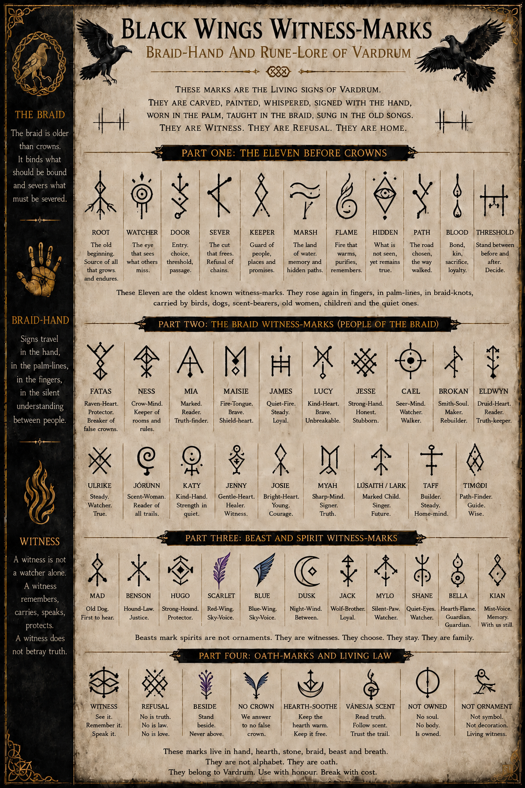

The Living Land
Vardrum
A land shaped by salt-marsh, villages, old roads, Crown authority, hidden families and powers buried beneath ordinary names.
The Map-Room
Salt-marsh roads, old forest law, Witness-Marks, hidden houses, animal witnesses and the living refusals beneath the world of Black Wings.
“A road is never empty if something remembers who crossed it.”
The World Beneath the Wings
The world of The Saga of Black Wings is not a silent backdrop. Roads remember footsteps. Houses remember names. Marshes conceal old routes, and animals often recognise danger before human law admits it exists.
This page introduces the places, customs, signs and living laws of the saga without opening its deepest locked doors.
Begin Here
The Living Land
A land shaped by salt-marsh, villages, old roads, Crown authority, hidden families and powers buried beneath ordinary names.
The Sanctuary
A place of refusal, chosen family, child-first law, animal witness and care that must never become ownership.
The Listening Ground
Road, refuge, danger and memory. Its reeds conceal routes, its mud keeps records and its birds carry warning.
The Northern Road
A hard northern land of cold roads, old loyalties, guarded histories and truths that survive beneath ice.
Braid-Hand and Sign-Lore
The Witness-Marks are fictional signs belonging entirely to the world of Black Wings. They are not historical Norse, Viking, Anglo-Saxon or archaeological runes.
Within the saga, they carry warning, memory, direction, protection, refusal and oath. They may appear in chalk, ash, paint, carving, braid-knots, hand-signs, bird-flight or marks left along the road.

Older Than the Crown
Before Crown record fixed the world into official names, eleven signs carried warnings and meanings older than any throne.
Speech Without Sound
Braid-Hand is a living language of warning, consent, care, direction, refusal and witness.
It passes beneath tables, across courtyards, through forests and along marsh paths. It belongs to fighters, watchers, children, scent-readers and anyone who needs truth to move without the mouth.
“Speech has many bodies, and witness kneels to read them all.”
Vardrum Household Speech
Good, excellent or well done.
Hello, good morning or I see you safely.
Goodbye, goodnight or travel safely.
Are you alright? Are you holding together?
Until we meet again.
What time is it? How late is the day?
Clear off. Leave before trouble follows.
False, bad, broken or not right.
What are you holding or hiding?
Where are you going? Are you leaving?
Those Who Notice
Animals in Black Wings are never decoration. They remember, warn, object, protect and judge. Their witness may arrive through sound, scent, posture, flight, instinct or silence.
Scarlet, Blue, Mad, Benson, Hugo, Shane, Mylo, Jack and Dusk each carry a different form of witness. Bella’s Flame carries courage and remembrance in another form.
“Not all who witness speak with human tongues.”
Power Made System
The Crown is more than a ruler. It is authority made into paper, title, custody, procedure, public story and control.
It does not always arrive carrying a blade. Sometimes it arrives with registers, hearings, promises and the claim that obedience should be mistaken for safety.
Beneath the Visible World
The Underroot is an old system of buried power, memory, hunger and connection beneath the world above.
What should nourish can be twisted into ownership. What should connect can become a net. The saga repeatedly asks whether an ancient structure deserves to survive merely because it has survived for a long time.
Ash and False Peace
The Agreement promises order, quiet and settlement. Its danger lies in the price demanded from those expected to become smaller so that the world may call itself peaceful.
“Peace bought with another person’s silence is only a quieter war.”
Walls That Remember
Houses within Black Wings are never only buildings. They may shelter, conceal, raise, imprison, remember, inherit or refuse.
A hearth can become sanctuary. A doorway can become law. A room may remember the people who were forbidden to speak there.
The Forest Road Ahead
Green Deer-Wood carries old forest law, hidden roots, animal signs and the arrival of powers that do not recognise Crown permission.
Its keepers understand that protection is not passive. Healthy growth may require listening, healing, pruning and the courage to cut away rot.
Living Law
Continue the Road